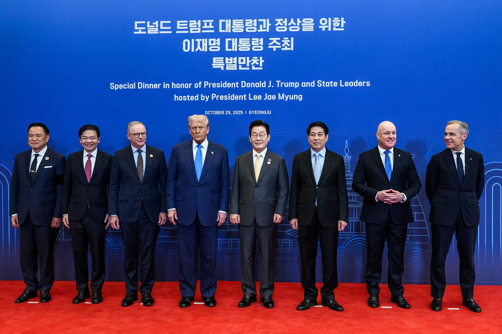

[한일수교 60년⑧] 2025년엔 한국 방문이 지지율 17%p를 올렸고, 2026년엔 선거가 316석을 줬다
요미우리 조사에서 이시바 내각 지지율이 22%에서 39%로, 2008년 이후 최대 상승폭이었다
그 회담의 구체적 성과는 워킹홀리데이 1회에서 2회로 늘린 것 하나였다
2026년 다카이치 지지율은 73%에서 54.3%로 내려왔고, 깎은 것은 모두 국내 문제였다
AI경제저널=김갑봉 기자 | 2025년 8월 23일 도쿄 회담은 일본 국내 정치에서 큰 효과를 냈다. 2026년에는 같은 수단이 같은 효과를 내지 않는다. 일본 정치가 한국 카드를 쓰던 국면이 끝났기 때문이다.

※ 이 연재는 2025년 인천투데이에 실린 「한일수교 60년」 연재를 잇는다. 논지는 이어받되 수치와 사실은 2026년 10월 기준으로 다시 확인해 썼다.
2025년 8월에 일어난 일
가. 숫자
회담은 2025년 8월 13일 발표되고 8월 23일 도쿄에서 열렸다. 8월 25일 한미 정상회담보다 먼저였다.
요미우리신문이 8월 22일부터 24일까지 조사한 결과 이시바 시게루 내각 지지율은 39%였다. 7월 참의원 선거 뒤 22%에서 17%포인트 올랐다. 2008년 전화 여론조사 도입 뒤 내각 교체 없이 나온 최대 상승폭이었다.
교도통신 조사는 35%로 전월보다 12.5%포인트 올랐다. 아사히신문은 36%로 7월 29%에서 7%포인트 올랐다.
나. 일본 언론의 읽기
요미우리, 아사히, 마이니치가 방문을 '서프라이즈'로 다뤘다. 트럼프 2기 정책 아래에서 관계를 안정시키려는 실용적 선택으로 읽었다.
다. 성과
공동문서에 들어간 구체적 합의는 워킹홀리데이 이용 횟수를 1회에서 2회로 늘린 것 하나였다. 수소와 인공지능, 사회문제, 교류 협력은 일반적 표현으로 적혔다. 투자 금액이나 시한은 없었다.
지지율은 17%포인트 올랐고 합의는 한 줄이었다. 이 비율이 2025년 한일관계의 교환 조건이었다.
이재명 대통령의 설명
이 대통령은 미국으로 향하는 기내에서 비판을 인정했다. 영토와 과거사 문제가 남아 있는 상태에서 협력의 부분적 진전이 아무 진전 없는 것보다 낫다고 했다.
이 설명에는 전제가 있다. 부분적 진전이 쌓여 전체로 간다는 전제다. 2026년의 결과를 보면 그 전제는 절반만 맞았다.
1998년과의 대조
1998년 10월 8일 공동선언은 식민지 지배의 피해를 명시하고 반성과 사죄를 적었다. 43개 항목의 행동계획이 붙었다.
1998년의 한국은 외환위기 직후였다. 협상력이 2025년보다 낮았다. 그런데 문서는 더 강했다.
협상력과 결과가 비례하지 않는다는 뜻이다. 변수는 협상력이 아니라 무엇을 의제로 올리는가다.
2026년: 지지율의 작동 방식이 바뀌었다
가. 73%에서 54.3%로
다카이치 사나에 내각은 출범 초 지지율이 70%를 넘었고 일부 조사에서 73%를 기록했다. 2026년 6월 지지통신 조사에서 54.3%였다. 6월 12일부터 15일까지 전국 성인 2000명을 대상으로 했다. 전월보다 5.1%포인트 내려갔다. 비지지는 22.2%로 역대 최고였다.
나. 깎은 것은 국내 문제다
하락 사유로 꼽힌 것은 자민당 총재 선거와 중의원 선거 과정에서 경쟁자를 공격하는 영상을 만들어 퍼뜨렸다는 의혹, 물가와 에너지 비용 상승에 대한 대응 부족, 식품 소비세 인하 공약 후퇴다. 설명이 납득되지 않는다는 응답이 다수였다.
40대 이하 지지가 한 조사에서 7%포인트 내려갔고 무소속층 지지가 다른 조사에서 45%로 내려갔다. 주요 7개국 회의 단체사진에서 빠졌다는 보도와 만찬에서 트럼프 대통령과 부딪혔다는 보도도 있었다.
한국과 관련된 항목은 없다.
다. 316석이 대체했다
2026년 2월 8일 총선에서 자민당은 316석을 얻었다. 개헌 발의선 310석을 혼자 넘었다. 유신회와 합쳐 465석 가운데 352석이다.
의석이 충분하면 지지율의 정치적 기능이 줄어든다. 2025년 이시바 총리에게 한국 방문이 필요했던 까닭은 소수 여당이었기 때문이다. 2026년의 다카이치 총리에게는 그 필요가 없다.
그러면 2026년 셔틀외교의 동력은 무엇인가
국내 정치가 아니라 대외 고립이다.
중국은 2026년 1월 6일 일본에 희토류 수출을 금지했고 9월 브리핑에서 일본 총리의 직함을 뺐다. 러시아는 평화조약 협상을 중단했다. 미국은 국방비 3.5%를 요구한다.
2025년의 일본은 지지율 때문에 한국이 필요했고 2026년의 일본은 공급망과 안보 때문에 한국이 필요하다. 후자가 더 단단한 동력이다. 선거로 해소되지 않기 때문이다.
성과의 구체성 비교
가. 2025년 8월 23일
워킹홀리데이 1회에서 2회. 나머지는 일반 표현.
나. 2026년 1월 13일과 5월 19일
액화천연가스 공급협력 약정 체결, 원유 공급·비축 정보 공유, 핵심광물 공급망 협력 참여, 호르무즈 해협 항행 협력, 안보정책협의회 차관급 격상, 조세이 탄광 유골 DNA 감정 절차 확정.
다. 그래도 빠진 것
강제동원에 대한 직접 사죄, 새 공동선언, 국회 비준. 2026년 10월 기준으로 없다.
구체성은 늘었고 영역은 그대로다. 경제와 안보에서 항목이 쌓이고 과거사에서는 인도적 사안 하나가 움직였다.
교훈 하나
2025년 8월의 교환은 한국이 먼저 가서 일본의 지지율을 17%포인트 올려 주고 한 줄을 받은 것이다. 2026년의 교환은 일본의 고립이 깊어진 상태에서 여러 줄을 받은 것이다.
차이는 타이밍이다. 상대가 약할 때 의제를 올려야 한다. 2026년 일본은 대외적으로 약하고 국내적으로 강하다. 대외 약세에 걸린 의제는 받아 냈고, 국내 강세에 걸린 의제, 즉 과거사와 개헌은 받아 내지 못했다.
다음 협상에서 무엇을 어디에 걸지는 이 구분에서 시작해야 한다.
참고문헌
요미우리신문 여론조사, 2025년 8월 22~24일
교도통신·아사히신문 2025년 8월 여론조사
지지통신 여론조사, 2026년 6월 12~15일
한일 정상 공동결과문서, 2025년 8월 23일
인천투데이, 「한일수교 60년 ⑧」, 2025년 8월 25일
※ 이 기사는 AI 프로그램 클로드를 활용해 작성했습니다.
관련기사
- [한일수교 60년⑨] 일본을 먼저 간 전략의 청구서, 관세 15%와 3500억달러였다
- [한일수교 60년⑦] 일본이 한국을 찾는 까닭, 2026년에는 숫자로 드러났다
- [한일수교 60년⑩] 2026년 한일의 공통 약점은 희토류다, 그래서 공급망이 의제가 됐다
- [한일수교 60년⑥] 일본 방위비 8조9000억엔 사상 최대, 그런데 2%에는 못 미친다
저작권자 © AI경제저널 무단전재 및 재배포, AI학습 및 활용 금지